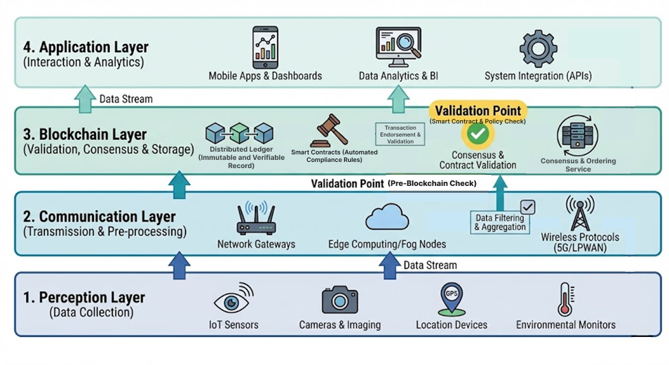

Master's Thesis · Research Project
Blockchain-Based Waste Lifecycle Traceability System
Master’s research project focused on the design and analytical evaluation of a blockchain-enabled architecture for waste lifecycle traceability. The proposed framework integrates IoT data, smart contracts, digital traceability, and formal verification concepts to improve transparency, accountability, and data integrity in circular-economy systems.